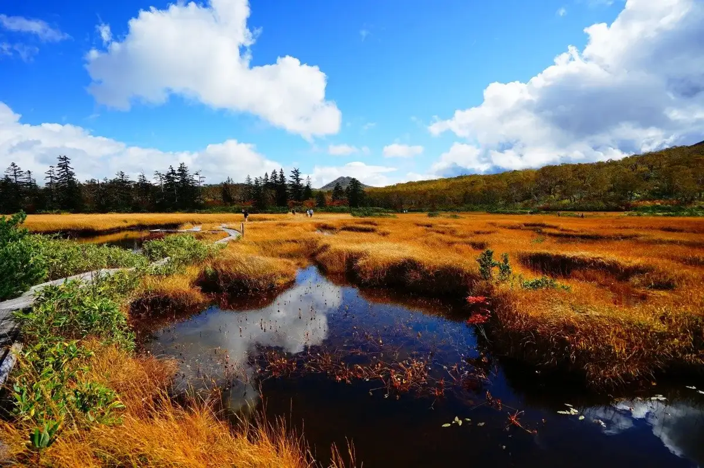
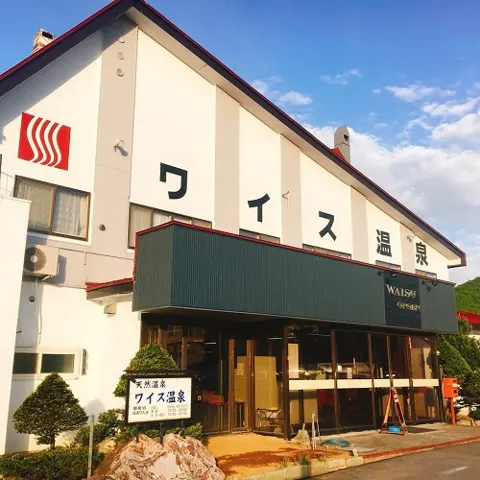
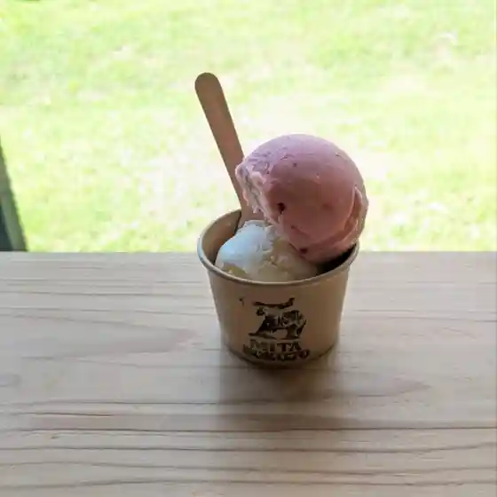
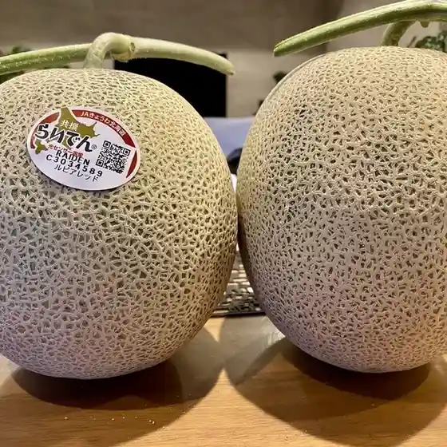
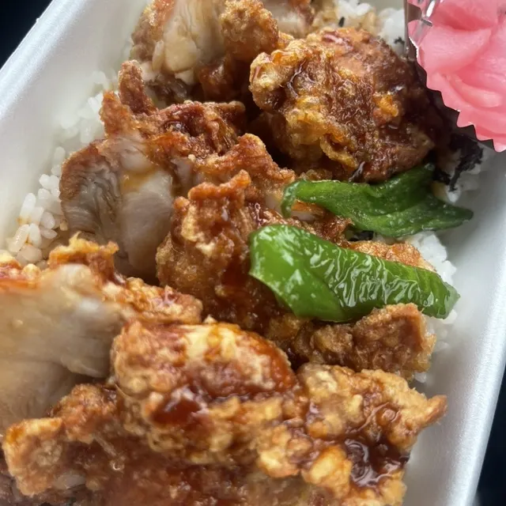
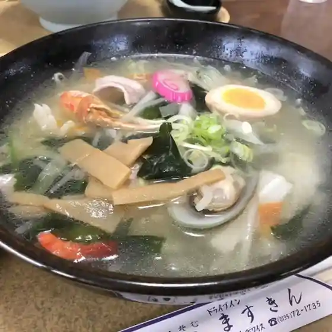
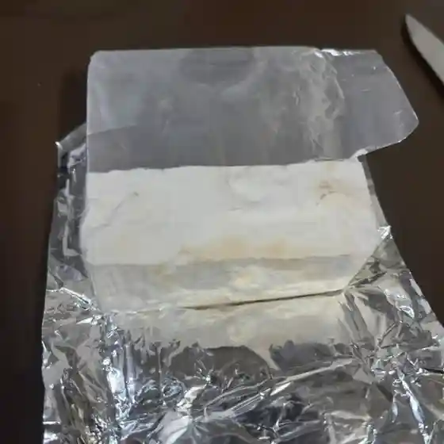
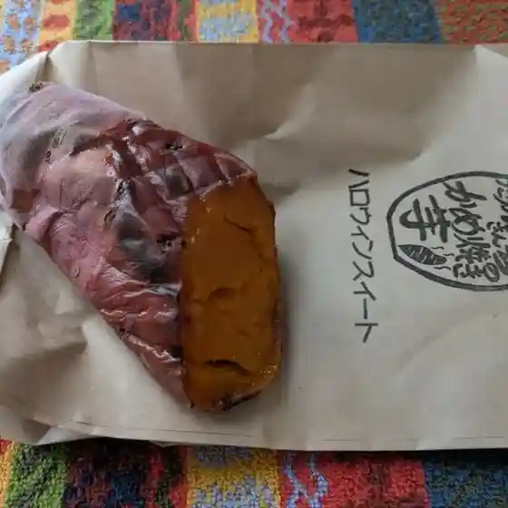
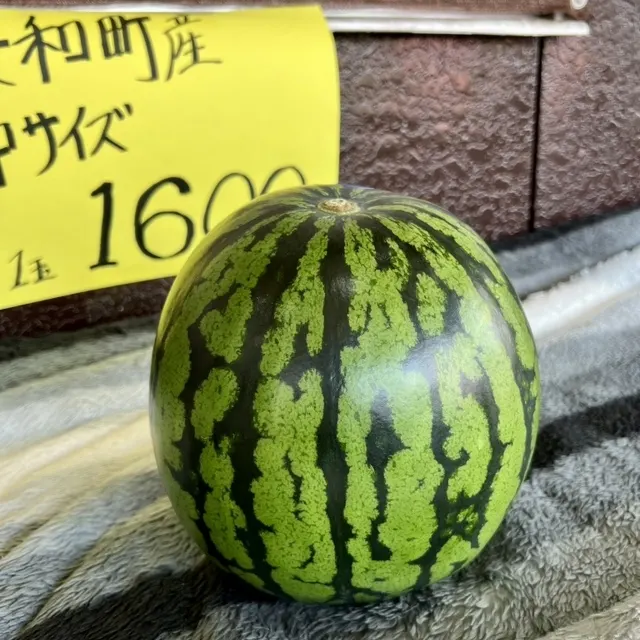

Kyowacho
Kyowacho · Hokkaido
Kyowacho
Highlighted on the Hokkaido map.

Stay
ワイス温泉

Waisu Onsen
Onsen lodging in Kyowacho, Hokkaido.
Dining
三田牧場

Mita Bokujou
JAきょうわ直売所

Ja Kyouwa Chokubai Tokoro
鳥や

Tori Ya
升金食堂

Masu Kin Shokudou
民宿いたや 共和店

Minshuku Itaya Kyouwa Mise
クレイル

Kureiru
たかはしさんちのかめ焼き芋

Takahashisanchinokame Yaki Imo
あいのさとやすらぎ農園新鮮野菜直売所

Ainosatoyasuragi Nouen Shinsen Yasai Chokubai Tokoro
レストラン若葉
Resutoran Wakaba
LAWSON 岩内泊店
Lawson Iwanai Haku Mise
ワイス温泉
Waisu Onsen
神仙沼自然休養林休憩所
Jinsennuma Shizen Kyuuyou Hayashi Kyuukeijo
ふたば弁当
Futaba Bentou
ぷち喫茶＆軽食 ふらわー
Puchi Kissa & Keishoku Furawaa
民宿もりした
Minshuku Morishita
本間製菓
Honma Seika
スープカレーゆうじ
Suupukaree Yuuji
佐藤農園農産物直売所
Satou Nouen Nousanbutsu Chokubai Tokoro
麺屋じぇんとるめん
Men Ya Jientorumen
民宿きたやま
Minshuku Kitayama
OSANPO
Osanpo
セイコーマート りやむない店
Seikoomaato Riyamunai Mise
とうりゃんせ
Touryanse
民宿りき
Minshuku Riki
Sights
Jinsennuma
Jinsennuma